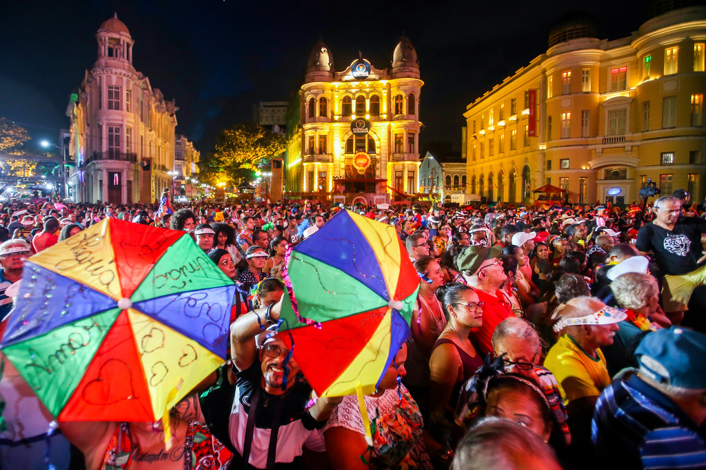

A Essência de Recife: O Marco Zero
O Marco Zero não é apenas um ponto turístico: ele é a essência e o coração da cidade do Recife. Localizado no bairro histórico do Recife Antigo, este ponto marca o local onde a cidade foi fundada, sendo assim, a origem de uma das metrópoles mais vibrantes do Brasil.

O círculo de azulejos desenhado no chão representa o ponto exato do Marco Zero. A partir deste ponto, todas as distâncias rodoviárias de Pernambuco são medidas. Além da sua importância histórica e geográfica, o local é também um centro de cultura. É aqui que ocorrem os principais eventos da cidade, como o Carnaval de Recife, quando o local fica repleto de foliões celebrando ao som do frevo.
Próximo ao Marco Zero, o visitante pode encontrar outros patrimônios históricos, como a Pinacoteca da cidade, o Parque das Esculturas Francisco Brennand, e a bela vista para o Rio Capibaribe, fazendo deste local um ponto de partida ideal para explorar a rica história e cultura de Recife.